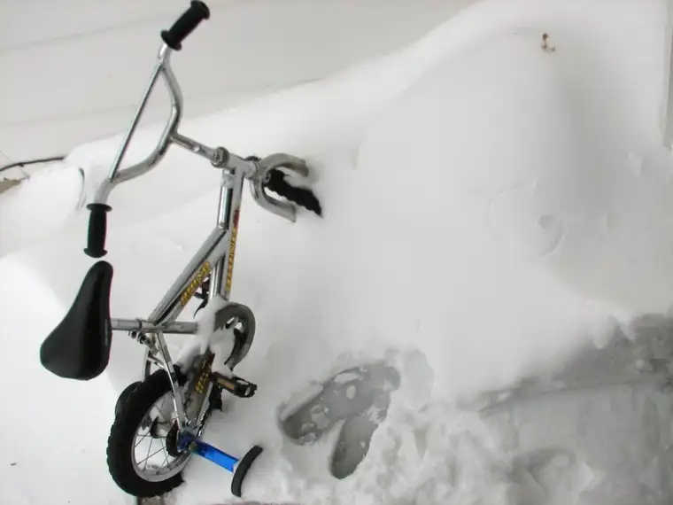
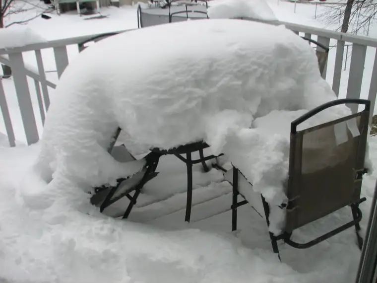
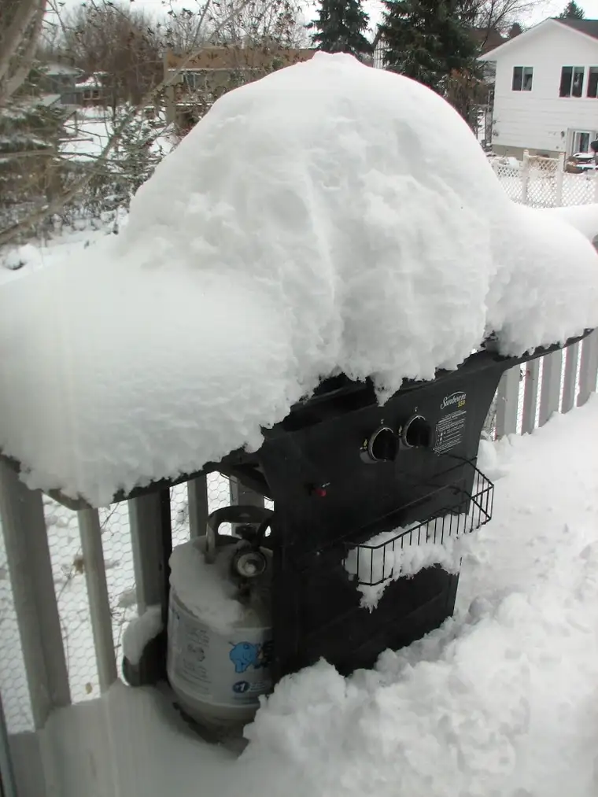

  
{kind=link}
{kind=link}
{kind=link}
Those who read yesterday’s post can draw a comparison of the first photo here to the one I snapped less than 12 hours ago. What I thought was a ridiculous spring scene yesterday afternoon has become even more ridiculous now on this, the 26th day of April. The flowerpot has gone into hiding and the deck table and chairs and grill are nearly buried. (Steaks anyone?) My son’s friend’s parents got stuck at the end of our driveway this morning when dropping him off from a sleepover. They needed to borrow our snow shovel to dig themselves out and it took about 20 minutes to get the job done.
So here’s what we’ve got. Instead of soccer games out on a sunny field,the kids are making forts with blankets inside, our oldest children are questioning global warming, and I am feeling justified in my procrastination. Do you suppose the fact that I hadn’t gotten around to putting away the winter gloves, boots and hats has anything to do with this spring silliness?
Here’s hoping the rest of you in the region can make good on what is beginning to feel like a cruel trick of nature. Maybe we can use this as an opportunity to teach our kids: the glass half full!